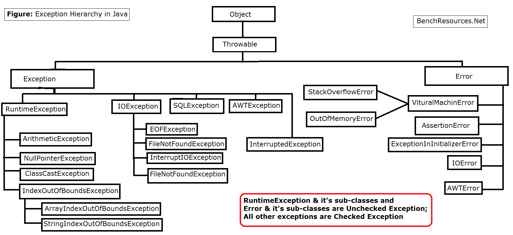

Exceptions
- Look at
MotivateExceptions.java.- This is a chain of simple methods that processes a data file.
- What should happen if a problem is detected at the very end of this chain?
- Imagine trying to pass error information all the way up that call stack.
- Each method would have to have an
ifstatement checking for success. - Might even need a complex return type to store different error conditions.
- What should a constructor do if there is a problem? (Remember, it doesn’t have a typical return value.)
- Solution: Exceptions.
- An exception is simply an object that describes a problem
- When a problem is detected, you instantiate an exception object and
throwit. - This object will propagate up the call stack until either:
- Somebody
catches it and handles it, or - It gets passed up by
mainand the program crashes with a stack trace.
- Somebody
- This allows you to automatically pass problems up to the level where they can actually be handled.
- And not have to explicitly touch them along the way.
-
Look at
MotivateExceptions2.java - Exceptions are organized into a hierarchy
- 
- The hierarchy allows you too look for problems at a variety of levels
- e.g., do you want to see any errors at all, or just those involved with I/O?
- e.g., do you want to see an I/O related errors, or just FileNotFound.
- Think about it as a hunting license. Do you want a license for rabbit, mammals, or any animal?
Checked vs. Unchecked exceptions
- In it’s motherly attempt to be helpful, Java generally requires you acknowledge any potential exceptions by either
catching them, or- putting a
throwsstatement in the method signature.
- The
throwsclause is how the compiler knows to nag anybody using the method. - However: Some exceptions (e.g.,
NullPointerExceptionorIndexOutOfBoundsexceptions) could (but shouldn’t) happen at any time.- Effectively every method would need a
catchorthrowsfor these exceptions. - Therefore, these exceptions are excluded from the “acknowledge” rule.
- Effectively every method would need a
- As a result, Java has two types of exceptions: Checked and Unchecked
- Checked exceptions require acknowledgement (
catchorthrows) - Unchecked exceptions do not.
- Checked exceptions require acknowledgement (
- This is implemented using inheritance:
- Any Exception that is a descendant of the
RuntimeExceptionclass is unchecked. - All other exceptions are checked.
- Any Exception that is a descendant of the
- Notice that
Exceptionimplements theThrowableinterface. - The other class that implements
ThrowableisError.- Errors are like exceptions; but are generally not recoverable.
- They typically represent problems with the class loader or JVM that you can’t fix as the program is running (e.g., running out of memory)
Making your own exceptions
- Simply create a class that inherits from either
Exception(if you want it checked) orRuntimeException(if you don’t).Exceptionprovides aStringinstance variable.- Feel free to add your own additional instance variables if desired.
- See
InvoiceWithCustomException.java - Look at my
Date163solution. Notice- Constructor throws
IllegalArgumentExceptionif date can’t be created. - I could have written a custom exception if I wanted more nuance in the cause of the problem.
- Notice the catch and re-throw.
- Notice that
NumberFormatExceptionis a subclass ofIllegalArgumentException, so the catch and re-throw is technically unnecessary (except that I wanted to customize the error message).
- Constructor throws
Misc.
- Remember: A method stops executing when it hits a
throwsstatement. (The following lines of code don’t execute.) - If you have “clean up” code that should always run, you can put it in a
finallyblock. - Avoid using exceptions when a simple
ifstatement could avoid the problem. For example,if (x < array.length>)is better than plowing ahead and catching theArrayIndexOutOfBoundsException.- Likewise, I prefer checking to see if a file exists before trying to open it.
- However, since files can get deleted while a program is running, you still need the try/catch block.